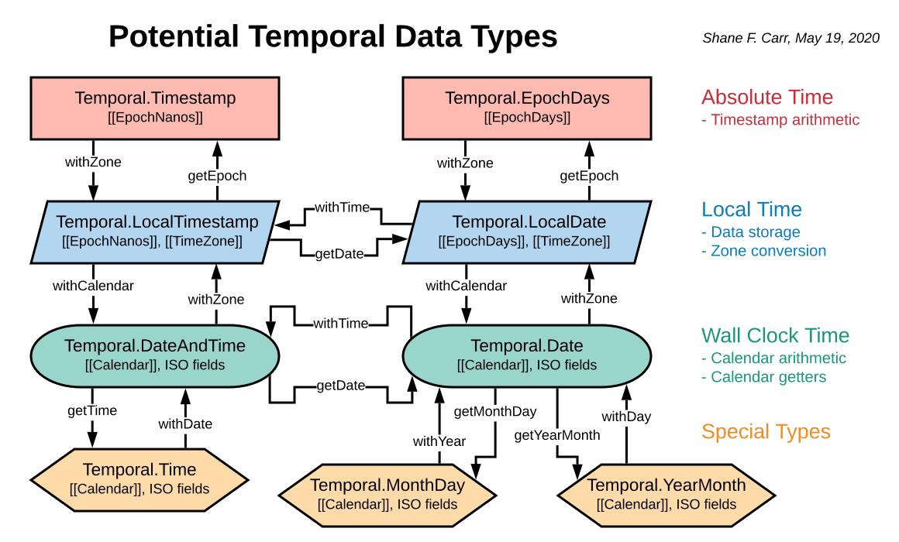

This doc describes a design for first-class support for non-Gregorian calendars in Temporal. Although most of this document is based on Temporal.PlainDate, most of this applies to Temporal.PlainDateTime, Temporal.PlainYearMonth, Temporal.PlainMonthDay, and Temporal.PlainTime as well.
The approach described in this document was largely adopted, so this document has been superseded by the Temporal.Calendar documentation.
Main issue: https://github.com/tc39/proposal-temporal/issues/290
Temporal.PlainDate currently has three internal slots: year, month, and day. (An "internal slot" refers to actual data, as opposed to "properties", which could be computed.) In this proposal, those slots are renamed to [[ISOYear]], [[ISOMonth]], and [[ISODay]], and an additional [[Calendar]] slot is added. The calendar slot contains an object implementing the Temporal.Calendar interface, described below.
No matter which calendar system is being represented, the data model in Temporal.PlainDate remains indexed in the ISO calendar. So, for instance, if you wanted to represent the Hebrew date 5 Nisan 5780, the data model would be 2020-03-30, and the calendar would be responsible for mapping that into the corresponding Hebrew fields, as described further down in this document.
This data model makes the simple assumption that the concept of a "day" is a solar day (main issues: #390, #389). Most or all modern-use calendars, even those with lunar month cycles, use a solar day, which is based on the time it takes for the Earth to complete one rotation relative to the Sun.
The acclaimed researchers Edward M. Reingold and Nachum Dershowitz discuss this subject in Calendrical Calculations:
The sun moves from east to west, and night follows day with predictable regularity. This apparent motion of the sun as viewed by an earthbound observer provided the earliest time-keeping standard for humankind. The day is, accordingly, the basic unit of time underlying all calendars, but various calendars use different conventions to structure days into larger units: weeks, months, years, and cycles of years.
Some historical calendars, such as the Hawaiian Moon Calendar, define a day as the time it takes for the Earth to complete one rotation relative to the moon (instead of the Sun), which is slightly shorter on average. For calendars that use a lunar day, a Temporal.PlainDateTime can be used instead of Temporal.PlainDate when the distinction is important.
At this time, Temporal does not support subdividing a solar day into anything other than hours, minutes, and seconds.
However, we have taken a future-proof approach so that if a use case presents itself, we can add timePlus(), timeMinus(), and timeDifference() methods to Temporal.Calendar.
As with Temporal.PlainDate, all of these types will gain a [[Calendar]] slot, and year, month, and day will be renamed [[ISOYear]], [[ISOMonth]], and [[ISODay]].
Main issue: https://github.com/tc39/proposal-temporal/issues/391
For reasons explained above, using the ISO calendar as the internal data model has many advantages. However, there are several challenges for these two "incomplete" types: lunar months don't line up with solar months, and not every lunar month occurs in every solar year. After discussing several data model alternatives, we reached the conclusion that the simplest data model for Temporal.PlainYearMonth and Temporal.PlainMonthDay is to make it share the same data model as Temporal.PlainDate, with the same slots.
For calendars that use ISO-style months, such as Gregorian, Solar Buddhist, and Japanese, "ISODay" and "ISOYear" can be ignored for YearMonth and MonthDay respectively. However, for lunar and lunisolar calendars, such as Hebrew, Saudi Arabian Islamic, and Chinese, these fields allow those calendars to disambiguate which YearMonth and MonthDay are being represented.
Main issue: https://github.com/tc39/proposal-temporal/issues/289
The new Temporal.Calendar interface is a mechanism to allow arbitrary calendar systems to be implemented on top of Temporal. Most users will not encounter the Temporal.Calendar interface directly, unless they are building or using a non-built-in calendar system.
All built-in calendars will be instances of Temporal.Calendar (main issue: #300), and Temporal.Calendar can be subclassed. However, an object need not be a subclass of Temporal.Calendar to conform to the interface, which are the string methods listed below.
We had also considered using symbols, but settled on strings after discussion with the plenary (main issue: #310).
If a custom calendar needs to cache per-object information about the localized year, month, and day of a Temporal object, it can use a WeakMap for this purpose, with the Temporal object as the key into the WeakMap.
All of the following methods return new Temporal objects.
class Temporal.Calendar {
/** Constructs a Temporal.PlainDate from a free-form option bag */
dateFromFields(
fields: object,
constructor: function
) : Temporal.PlainDate;
/** Constructs a Temporal.PlainYearMonth from a free-form option bag */
yearMonthFromFields(
fields: object,
constructor: function
) : Temporal.PlainYearMonth;
/** Constructs a Temporal.PlainMonthDay from a free-form option bag */
monthDayFromFields(
fields: object,
constructor: function
) : Temporal.PlainMonthDay;
/** A string identifier for this calendar */
id : string;
fields(
fields: array<string>
) : array<string>;
//////////////////
// Arithmetic //
//////////////////
/** Returns input plus duration according to the calendar rules. */
dateAdd(
input: Temporal.PlainDate,
duration: Temporal.Duration,
options: /* options bag */,
constructor: function
) : Temporal.PlainDate;
/** Returns input minus duration according to the calendar rules. */
dateSubtract(
input: Temporal.PlainDate,
duration: Temporal.Duration,
options: /* options bag */,
constructor: function
) : Temporal.PlainDate;
/** Returns larger minus smaller, which are dates in the same calendar. */
dateUntil(
smaller: Temporal.PlainDate,
larger: Temporal.PlainDate,
options: /* options bag */
) : Temporal.Duration;
////////////////////////////////////
// Accessors: //
// Semantics defined in date.md //
////////////////////////////////////
year(
input: Temporal.PlainDate
) : number;
month(
input: Temporal.PlainDate
) : number;
day(
input: Temporal.PlainDate
) : number;
dayOfWeek(
input: Temporal.PlainDate
) : number;
weekOfYear(
input: Temporal.PlainDate
) : number;
daysInMonth(
input: Temporal.PlainDate
) : number;
daysInYear(
input: Temporal.PlainDate
) : number;
inLeapYear(
input: Temporal.PlainDate
) : boolean;
}The corresponding fields on Temporal.PlainDate.prototype should forward requests to the calendar as discussed in #291:
get foo(...args) {
return this.calendar.foo?.(this, ...args);
}Calendars can add additional calendar-specific accessors, such as the year type ("kesidran", "chaser", "maleh") in the Hebrew calendar, and may add conforming accessor methods to Temporal.PlainDate.prototype.
If any of these accessors are needed for constructing a Temporal.PlainDate from fields, then the calendar should implement fields() which, given an array of field names in the ISO calendar, returns an array of equivalent field names in the calendar.
We are not aware of this being necessary for any built-in calendars.
An instance of MyCalendar is expected to have stateless behavior; i.e., calling a method with the same arguments should return the same result each time. There would be no mechanism for enforcing that user-land calendars are stateless; the calendar author should test this expectation on their own in order to prevent unexpected behavior such as the lack of round-tripping.
Main issue: https://github.com/tc39/proposal-temporal/issues/403
If properties of Temporal.PlainDate, etc., are to be enumerable, the calendar should choose which properties to expose. This operation can cake place in the factory methods of the Temporal.Calendar protocol, such as .dateFromFields().
This is a work in progress, and this document will be updated once we reach consensus on #403.
Main issue: https://github.com/tc39/proposal-temporal/issues/292
An open question is what the behavior should be if the programmer does not specify a calendar, or if we should require the programmer to always specify a calendar. Six choices are on the table:
Intl.defaultCalendar (a new symbol), or ISO if that field doesn't exist.As of October 2020, the Temporal champions chose to adopt Option 6 as the best balance between i18n correctness and ergonomics.
A partial ISO calendar would be one implemented as follows:
const PartialIsoCalendar = {
id: "iso",
dateFromFields(fields, constructor) {
const { year, month, day } = fields;
return new constructor(year, month, day, this);
}
// Same for dateTimeFromFields, etc.
// ALL OTHER METHODS:
dateAdd() {
throw new TypeError("Unsupported operation: full calendar required");
}
// Same for subtract, etc.
}It would in effect render default Temporal.PlainDate (and Temporal.PlainDateTime) with fewer operations until you specify a calendar. The following methods/getters would throw:
* We could allow the arithmetic methods to work in Partial ISO if the duration units are days or smaller, with the same semantics as Temporal.Instant.
The following methods/getters would still work:
Although small, this set of operations still covers many of the recipes in the proposed Temporal Cookbook.
To enable the extended set of operations, the user would just use .withCalendar():
// Force the Gregorian calendar:
Temporal.PlainDate.from('2019-12-06').withCalendar('gregory').weekOfYear;
// Use a calendar from another source:
Temporal.PlainDate.from('2019-12-06').withCalendar(Intl.defaultCalendar).weekOfYear;
Temporal.PlainDate.from('2019-12-06').withCalendar(request.calendar).weekOfYear;The calendar IDs are less clear. If the partial ISO calendar used ID "iso", then what would the full ISO calendar use? ID "gregory" (why not "gregorian"?) is misleading because there are Gregorian calendars that do not all agree on the same rules for things like weeks of the year. One solution could be to use a nullish ID like null or "" for the partial ISO calendar and "iso" for the full ISO calendar. Alternatively, "iso8601", the identifier defined by CLDR as "Gregorian calendar using the ISO 8601 calendar week rules", could be the identifier for the full ISO calendar.
In this option, objects without a calendar would have their own type, and calendar-specific types would be used only when calendar-dependent functionality is required. This is similar in spirit to Partial ISO (Option 3), except that new types are used, rather than simply a null calendar on the existing type.
For example, name bikeshedding aside, Temporal.ZonedAbsolute (main issue: #569) could become an intermediate type between Temporal.Instant and Temporal.PlainDateTime that does not include arithmetic or calendar-dependent functionality. A calendar would be necessary when converting from Temporal.ZonedAbsolute into Temporal.PlainDateTime.
Temporal.Instant = a point in time, not specific to a certain place. - Data Model: [[EpochNanoseconds]]Temporal.ZonedAbsolute = a point in time at a place on Earth. - Data Model: [[EpochNanoseconds]] + [[TimeZone]]Temporal.PlainDateTime = a wall clock time, not specific to a certain place. - Data Model: [[Calendar]] + ISO fieldsConversion methods between these three types could be:
// Absolute <=> ZonedAbsolute
Temporal.Instant.prototype.withZone(tz) : Temporal.ZonedAbsolute;
Temporal.ZonedAbsolute.prototype.toInstant() : Temporal.Instant;
// ZonedAbsolute <=> DateTime
Temporal.ZonedAbsolute.prototype.withCalendar(cal) : Temporal.PlainDateTime;
Temporal.PlainDateTime.prototype.withZone(tz) : Temporal.ZonedAbsolute;We could add a similar intermediate type for dates without times. Name bikeshedding aside, this second new type could be Temporal.AbstractDate. The semantics would be:
Temporal.AbstractDate = a solar day at a place on Earth - Data Model: [[EpochDays]] + [[TimeZone]]Temporal.PlainDate = a wall clock date, not specific to a certain place. - Data Model: [[Calendar]] + ISO fieldsConversion methods:
// ZonedAbsolute <=> AbstractDate
Temporal.ZonedAbsolute.prototype.getDate() : Temporal.AbstractDate;
Temporal.AbstractDate.prototype.withTime() : Temporal.ZonedAbsolute;
// AbstractDate <=> Date
Temporal.AbstractDate.prototype.withCalendar(cal) : Temporal.PlainDate;
Temporal.PlainDate.prototype.withZone(tz) : Temporal.AbstractDate;
// Date <=> DateTime
Temporal.PlainDateTime.prototype.getDate() : Temporal.PlainDate;
Temporal.PlainDate.prototype.withTime() : Temporal.PlainDateTime;An additional type, Temporal.EpochDays, could be added as an analog of Temporal.Instant but with days instead of nanoseconds since epoch.
Here is an illustrated version of this option:

With this option, separate methods would indicate whether the Full ISO calendar should be used versus a potentially non-ISO calendar. For example, Temporal.now.plainDateISO would be added to supplement Temporal.now.plainDate. See the full table below.
The main way the six options differ is by how and when a calendar is specified when creating calendar-sensitive Temporal objects.
The following table describes these semantics. Option 5 is not shown because the constructors will be different than in options 1-4 and 6.
| Method | Option 1 | Option 2 | Option 3 | Option 4 | Option 6 |
|---|---|---|---|---|---|
| T.Date.from(string)* | From String | Explicit | Partial ISO | Environ. | From String |
| T.Date.from(fields)** | From Object | Explicit | Partial ISO | Environ. | From Object |
| new T.Date() | Full ISO | Full ISO | Full ISO | Full ISO | Full ISO |
| T.now.plainDate() | Full ISO | Explicit | Partial ISO | Environ. | Explicit |
| T.now.plainDateISO() | N/A | N/A | N/A | N/A | Full ISO |
| instant.inTimeZone() | Full ISO | Explicit | Partial ISO | Environ. | Explicit |
| instant.inZoneISO() | N/A | N/A | N/A | N/A | Full ISO |
| date.getMonthDay()**** | Inherit | Inherit | Explicit | Inherit | Inherit |
| HTML input*** | Full ISO | Full ISO | Full ISO | Full ISO | Full ISO |
Footnotes:
* from(string) may carry the calendar ID in the string (main issue: #293).
** @ptomato pointed out that "if you write Temporal.PlainDate.from({ year: 2020, month: 5, day: 19 }) with no calendar specified, then realistically what else do you mean besides the full ISO calendar?" Therefore, a calendar argument is not required in T.Date.from.
*** The HTML5 spec only supports ISO-8601 (reference).
**** An argument could be added to getMonthDay() in Options 3 and 5 to reduce boilerplate.
As compared to option 1 (always default to Full ISO), the following are examples of programming errors that Partial ISO would help prevent.
These errors are most common in the four regions that use non-ISO calendars as their default: Saudi Arabia, Iran, Afghanistan, and Thailand. However, they could also manifest if the user has overridden their preferred calendar in browser settings.
For the purposes of illustration, the following examples will use the locale "en-SA" (English in Saudi Arabia) on 2020-05-17.
Buggy output:
Today is: May 17Correct output:
Today is: Ramadan 24Code:
/// Options 1 and 4: calendar implicit
const today = Temporal.now.plainDate();
// OPTION 1 BUG: the ISO calendar is implicit when creating the MonthDay
const monthDay = today.getMonthDay();
console.log('Today is:', monthDay.toLocaleString());
/// Options 2 and 6: calendar in factory method
const calendar = navigator.locales[0].getLikelyCalendar();
const today = Temporal.now.plainDate(calendar);
const monthDay = today.getMonthDay();
console.log('Today is:', monthDay.toLocaleString());
/// Option 3 and 5: getMonthDay() requires a calendar to be given
const today = Temporal.now.plainDate();
const calendar = navigator.locales[0].getLikelyCalendar();
const monthDay = today.withCalendar(calendar).getMonthDay();
console.log('Today is:', monthDay.toLocaleString());
/// Option 3 and 5 alternative: add argument to getMonthDay()
const today = Temporal.now.plainDate();
const calendar = navigator.locales[0].getLikelyCalendar();
const monthDay = today.getMonthDay(calendar);
console.log('Today is:', monthDay.toLocaleString());
/// Alternative using Intl settings
const today = Temporal.now.plainDate();
console.log(
'Today is:',
today.toLocaleString(undefined, {
month: 'long',
day: 'numeric'
})
);Buggy output:
Today is: Ramadan 24, 1441 AH
Next month is: Shawwal 25, 1441 AHCorrect output:
Today is: Ramadan 24, 1441 AH
Next month is: Shawwal 24, 1441 AHCode:
/// Options 1 and 4: calendar implicit
const today = Temporal.now.plainDate();
console.log('Today is:', today.toLocaleString());
// OPTION 1 BUG:
// Arithmetic in months must take place in the user calendar
const nextMonth = today.add({ months: 1 });
console.log('Next month is: ', nextMonth.toLocaleString());
/// Options 2 and 6: calendar in factory method
const calendar = navigator.locales[0].getLikelyCalendar();
const today = Temporal.now.plainDate(calendar);
console.log('Today is:', today.toLocaleString());
const nextMonth = today.add({ months: 1 });
console.log('Next month is: ', nextMonth.toLocaleString());
/// Options 3 and 5: calendar only when needed
const today = Temporal.now.plainDate();
console.log('Today is:', today.toLocaleString());
const calendar = navigator.locales[0].getLikelyCalendar();
const nextMonth = today.withCalendar(calendar).add({ months: 1 });
console.log('Next month is: ', nextMonth.toLocaleString());Buggy output:
Today is: Ramadan 24, 1441 AH
Is May 18 your birthday?Correct output:
Today is: Ramadan 24, 1441 AH
Is Ramadan 24 your birthday?Code:
/// Options 1 and 4: calendar implicit
const date = Temporal.now.plainDate();
console.log('Today is:', date.toLocaleString());
// OPTION 1 BUG:
// The MonthDay needs to be represented in the user calendar; otherwise,
// toLocaleString must format in the ISO calendar.
const monthDay = date.getMonthDay();
console.log(`Is ${monthDay.toLocaleString()} your birthday?`);
/// Options 2 and 6: calendar in factory method
const calendar = navigator.locales[0].getLikelyCalendar();
const date = Temporal.now.plainDate(calendar);
console.log('Today is:', date.toLocaleString());
const monthDay = date.getMonthDay();
console.log(`Is ${monthDay.toLocaleString()} your birthday?`);
/// Options 3 and 5: calendar only when needed
const date = Temporal.now.plainDate();
console.log('Today is:', date.toLocaleString());
const calendar = navigator.locales[0].getLikelyCalendar();
const monthDay = date.withCalendar(calendar).getMonthDay();
console.log(`Is ${monthDay.toLocaleString()} your birthday?`);Buggy output:
Today is: Ramadan 24, 1441 AH
Number of days this month: 31Correct output:
Today is: Ramadan 24, 1441 AH
Number of days this month: 30Code:
/// Options 1 and 4: calendar implicit
const date = Temporal.now.plainDate();
// OPTION 1 BUG:
// The YearMonth needs to be represented in the user calendar
const yearMonth = date.getYearMonth();
console.log('Today is:', date.toLocaleString());
console.log('Number of days this month:', yearMonth.daysInMonth);
/// Options 2 and 6: calendar in factory method
const calendar = navigator.locales[0].getLikelyCalendar();
const date = Temporal.now.plainDate(calendar);
const yearMonth = date.getYearMonth();
console.log('Today is:', date.toLocaleString());
console.log('Number of days this month:', yearMonth.daysInMonth);
/// Options 3 and 5: calendar only when needed
const date = Temporal.now.plainDate();
const calendar = navigator.locales[0].getLikelyCalendar();
const yearMonth = date.withCalendar(calendar).getYearMonth();
console.log('Today is:', date.toLocaleString());
console.log('Number of days this month:', yearMonth.daysInMonth);Legend:
| Option | API consistency & predictability | Impact on Temporal call sites | Impact on i18n correctness | Impact on interoperability | Logistics |
|---|---|---|---|---|---|
| Full ISO (option 1) | 😃 Consistent and predictable | 😃 No changes | ☹️ Programmer needs to know to "opt in" to use the user's calendar preference | 😃 ISO is the industry standard format | 😃 No changes |
| No Default (option 2) | 😃 Consistent and predictable | 😐 All call sites require extra boilerplate | 😃 All operations require an explicit choice | 😃 Explicit choice | 🙂 Minimal API changes |
| Partial ISO (option 3) | 😐 Predictable behavior, but call sites may or may not require an explicit calendar | 🙂 Most* operations work; some require extra boilerplate | 😃 Calendar-sensitive operations require an explicit choice | 😃 I/O operations operate in the ISO calendar space | 🙂 No API changes, but edge cases to hash out |
| User Preference (option 4) | 😐 Consistent API, but unpredictable behavior based on user's or server's location | 😃 No changes | 🙂 Correct on front end, but programmer needs to know to "opt in" on back end | 😐 Certain operations implicitly use a non-ISO calendar | 🙂 Minimal API changes |
| New Types (option 5) | 🙂 Consistent, but the new types may increase mental load | 🙂 Most* operations work; some require extra boilerplate | 😃 Calendar-sensitive operations require an explicit choice | 😃 I/O operations operate in the ISO calendar space | 😐 Lots of new types and API changes |
| ISO Factories (option 6) | 😐 Unclear whether to use ISO or non-ISO factories | 🙂 Method names at call sites may change | 🙂 Likely to be correct, but users could call the ISO factories incorrectly | 😃 ISO-specific methods for interop | 🙂 Minimal API changes |
*See https://github.com/tc39/proposal-temporal/issues/240#issuecomment-557726669
Temporal.PlainDate.prototype.with does not modify the calendar. A new method is added for that:
Temporal.PlainDate.prototype.withCalendar = function (newCalendar: Calendar): Temporal.PlainDate {
const { year, month, day } = this.getISOFields();
// note: call intrinsic version
return new Temporal.PlainDate(year, month, day, newCalendar);
// note: use species constructor
};This is an open question being discussed in #293. The issue is that we do not want toString() to be lossy by losing the calendar field. One proposal is to append the Temporal.Calendar.id field in [c=ID] following the date. For example, 2019-12-06[c=hebrew] refers to 2019-12-06 projected into the Hebrew calendar.
Temporal.PlainDate.prototype.toString = function() {
let calendarKeyword, isoDate;
// For Default Calendar Option 3, check for the partial ISO calendar here
if (/* this.calendar is the ISO calendar */) {
calendarKeyword = null;
isoDate = this;
} else {
calendarKeyword = this.calendar.id;
isoDate = this.withCalendar(Temporal.Calendar.iso); // call intrinsic
}
// return an ISO string for isoDate with calendar in brackets:
// "2019-12-06[c=hebrew]"
}In this scenario, Temporal.PlainDate.from() will call Temporal.Calendar.from() to resolve the ID into a Calendar object.
Temporal.parse() will have to add a new calendar member to the object it returns, whose value is the string ID given in a [c=ID] comment, or null if not given.
Temporal.Calendar.from() can be monkeypatched by calendar implementors if it is necessary to make new time zones available globally.
The expectation is that it would rarely be necessary to do so, because if you have implemented a custom calendar for a particular application, you probably don't need it to be available globally.
Example of monkeypatching for a custom calendar:
const fooCalendar = new FooCalendar();
const originalTemporalCalendarFrom = Temporal.Calendar.from;
Temporal.Calendar.from = function (item) {
let id;
if (item instanceof Temporal.Calendar) {
({ id } = item);
} else {
const string = `${item}`;
try {
id = Temporal.parse(item).calendar;
} catch {
id = string;
}
}
if (id === 'foo') return fooCalendar;
return originalTemporalCalendarFrom.call(this, item);
};
Temporal.PlainDate.from('2019-12-03[c=foo]');
// 2019-12-03 projected into the foo calendarThe exact behavior of this method depends on a few open discussions, but some logic will be passed to the Calendar object in order to project the date into the correct calendar system.
Temporal.PlainDate.from = function(thing: string | object, options: object) {
if (typeof thing === "string") {
let object = // components of string
return Temporal.Calendar.iso.dateFromFields(object, this);
} else {
// Get the calendar object, either the default calendar or something based
// on thing.calendar (string lookup or object)
let calendar = // ...
return calendar.dateFromFields(thing, this);
}
}As discussed earlier, Temporal.PlainDate will defer to Temporal.Calendar methods wherever necessary. Example implementation of selected Temporal.PlainDate methods:
Temporal.PlainDate.prototype.add = function (duration, options) {
const constructor = ES.SpeciesConstructor(this, Temporal.PlainDate);
return this.calendar.dateAdd(this, duration, options, constructor);
};
Temporal.PlainDate.prototype.until = function (other, options) {
if (other.calendar !== this.calendar) {
// Note: call intrinsic versions of this method
other = other.withCalendar(this.calendar);
}
return this.calendar.dateUntil(this, other, options);
};
Temporal.PlainDate.prototype.with = function (overrides) {
const newFields = Object.assign({}, this.getFields(), overrides);
return this.calendar.dateFromFields(newFields);
};
Temporal.PlainDate.prototype.getYearMonth = function () {
return this.calendar.yearMonthFromFields(this.getFields());
};Note that the arguments to methods like with, withDate, etc., are interpreted in the instance's calendar.
The third way to get a Temporal.PlainDate (besides from a string and an object) is to convert it from a Temporal.Instant.
The API here would depend on the decision for whether to require an explicit default calendar. If we decide to use a default calendar (options 1, 3, and 4), no API change would be required for this method. If we decide to require an explicit calendar, then the API would likely be changed as follows:
// Default calendar option 2 only
Temporal.Instant.prototype.inTimeZone = function(timeZone, calendar) {
const isoDate = // compute the ISO date from the time zone
return isoDate.withCalendar(calendar);
}The fourth way to get a Temporal.PlainDate is to get the current time according to the environment (or mocked for SES).
As above, this API depends on whether we decide to use a default calendar. If we require an explicit calendar, it would be similar to above:
Temporal.now.plainDate = function (calendar) {
const instant = Temporal.now.instant(); // use intrinsic
const timeZone = Temporal.now.timeZone(); // use intrinsic
return instant.inTimeZone(timeZone, calendar); // use intrinsic
};All of the following APIs would gain an internal slot for the calendar.
In some calendars (such as the Japanese imperial calendar) a year is not enough information to be able to convert Temporal.PlainMonthDay to Temporal.PlainDate.
Temporal.PlainMonthDay.withYear, which previously took a number argument (the year), can now be passed an object which must have properties that provide the needed information.
(In the Japanese calendar, it needs to have era and year properties.)
Passing a numerical year argument num is equivalent to passing { year: num }.
The calendar can decide what to do in the case of missing information, in dateFromFields.